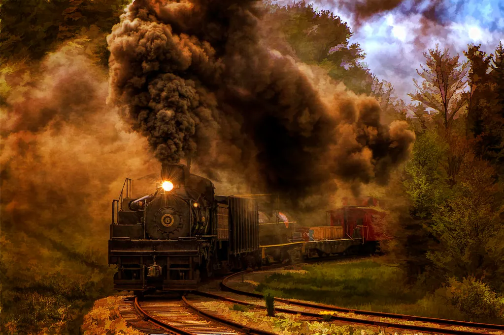

American History
Four long reads on the American drive to conquer distance and bind a continent together — the transcontinental railroad, Route 66, the space race, and the Erie Canal — told at leisure and told honestly.

The transcontinental railroad
For most of the nineteenth century, crossing the American continent was a journey of months, by wagon or by ship around the tip of South America. The transcontinental railroad changed that forever. Completed in 1869, when the rails of two companies met at Promontory Summit in the Utah Territory and a ceremonial golden spike was driven, it bound the eastern and western halves of the nation together with bands of iron.
The building of it was an epic of labor and hardship. Crews, including thousands of Chinese immigrants in the West and Irish immigrants in the East, laid track across deserts, through mountains, and over rivers, in heat and snow, for years. The work was dangerous and the conditions harsh, and the achievement came at real human cost that deserves to be remembered alongside the triumph. When it was done, a journey that had taken months could be made in about a week, and the country was never the same.
The railroad's effects rippled through every corner of American life. It carried settlers west and crops and cattle east, it tied distant markets into a single economy, and it hastened the transformation of the frontier. It also brought painful consequences for the Native peoples whose lands it crossed, a part of the story that an honest almanac does not omit. The transcontinental railroad is, in short, a tale of extraordinary ambition and achievement, shadowed by real costs — which is to say, a true piece of history. The golden spike driven that day joined far more than two sets of rails; it joined two halves of a continent into a single, striving nation.
Route 66, the Mother Road
If the railroad was the artery of the nineteenth century, the highway was the artery of the twentieth, and no highway captured the American imagination like Route 66. Established in 1926, it ran some two thousand miles from Chicago to the Pacific coast at Santa Monica, threading through eight states and countless small towns along the way. It became far more than a road; it became a symbol of freedom, mobility, and the open American landscape.
Route 66 came into its own in hard times. During the Great Depression, it carried families fleeing the Dust Bowl westward in search of work and a fresh start, and the author John Steinbeck gave it the enduring nickname "the Mother Road." In the prosperous decades after the Second World War, it carried a new kind of traveler: the vacationing family, drawn west by the promise of adventure. Diners, motels, gas stations, and roadside attractions sprang up to serve them, creating a whole culture of the American road.
The road's golden age faded as the modern interstate highways, with their wide lanes and bypasses, drew traffic away from the small towns. Route 66 was officially removed from the highway system in the 1980s, and many of the towns along it struggled. Yet the road refused to die. Today, stretches of it are lovingly preserved, and travelers from around the world come to drive the old route, to see the vintage signs and diners, and to feel a little of the romance of the American road. It endures not as a route from one place to another, but as a journey into memory.
The space race
In the decades after the Second World War, the United States and the Soviet Union were locked in a tense rivalry, and one of its most dramatic stages was the heavens themselves. The space race began in earnest in 1957, when the Soviet Union launched Sputnik, the first artificial satellite, a small beeping sphere that nonetheless stunned the world and spurred America into action. The contest that followed would, within little more than a decade, carry human beings to another world.
The American effort gathered pace through the 1960s, driven by President Kennedy's bold 1961 pledge to land a man on the Moon and return him safely before the decade was out. It was a staggering goal, demanding inventions and feats of engineering that did not yet exist. Thousands of scientists, engineers, and workers devoted years to it, through triumphs and tragedies alike, in one of the largest peacetime undertakings in history.
The goal was met in July 1969, when Apollo 11 landed on the Moon and an astronaut stepped onto its surface before a watching world, speaking of a giant leap for mankind. It was a moment of such magnitude that most who witnessed it can still recall exactly where they were. Beyond the rivalry that sparked it, the space race left a lasting legacy of scientific knowledge, technological advance, and a new view of our own planet — a small blue world, seen whole for the first time from the darkness of space.
The Erie Canal
Before the railroads and the highways, there was the canal, and none was more consequential than the Erie. Completed in 1825 after eight years of digging, it stretched some 360 miles across New York State, connecting the Hudson River — and thus the Atlantic Ocean — to Lake Erie and the vast interior of the continent. It was a feat of engineering that many had called impossible, and it transformed the young nation.
Before the canal, moving goods overland was slow and ruinously expensive. The Erie Canal cut the cost of shipping dramatically and the time to a fraction, opening the fertile Midwest to eastern markets and the world. Towns and cities blossomed along its length, and New York City, with its harbor at the canal's seaward end, grew into the nation's great commercial metropolis. The canal helped shift the center of American commerce and settlement decisively westward.
The Erie Canal also captured the popular imagination, celebrated in song and story, and it demonstrated that bold public works could reshape a nation's fortunes. Though the railroads would later eclipse it for speed, the canal remains a monument to ambition and ingenuity, and parts of it are still enjoyed today by boaters and walkers who trace the old towpaths. It is a reminder that some of history's greatest changes flowed, quite literally, along a ditch dug by hand — and that a bold idea, well executed, can reshape the fortunes of a whole nation. The Erie Canal proved that the young United States could dream and build on a grand scale, a confidence that would carry it across the continent in the decades to come.
The interstate highway system
If Route 66 was the romance of the American road, the interstate highway system was its grand, practical culmination. Launched in the 1950s as one of the largest public works projects in the nation's history, it laid down tens of thousands of miles of wide, high-speed, limited-access highways connecting virtually every corner of the country. It was conceived partly with national defense in mind, and partly to serve a nation that had fallen thoroughly in love with the automobile.
The effects were as sweeping as the railroad's a century before. The interstates made long-distance travel and shipping faster and cheaper than ever, knitting distant regions into a single market and putting the whole country within a few days' drive. They fueled the growth of the suburbs, the trucking industry, and the roadside economy of motels and service plazas. They made the family road trip a national institution and shrank the vast American distances once again.
Yet the interstates, like every great change, had their costs. Their construction sometimes cut through and divided established neighborhoods, and the bypasses they created drained the life from many of the small towns along the older roads, Route 66 among them. The interstate system is thus a fitting close to this shelf's theme: another magnificent American conquest of distance, bringing enormous benefits and real losses together, as the biggest changes always do. To drive one of those long ribbons of highway today is to travel a monument as grand in its way as any railroad or canal.
Why these stories matter
Taken together, these four tales — the railroad, the road, the rocket, and the canal — tell a larger story about America: a restless, ambitious nation forever seeking to conquer distance and connect its far-flung parts. Each in its turn shrank the continent, bound strangers into a single people, and remade the economy and the landscape. And each, told honestly, carries its shadows as well as its triumphs, for that is the nature of real history — no great human achievement is ever wholly unmixed, and an almanac worth its lamp oil says so plainly.
We tell these stories at length and in plain words because we believe history is best understood as narrative — not a list of dates to memorize, but a living account of how people met the challenges of their time. There is a through-line in all of them, too: the restless American faith that distance can be conquered, that the far parts of a vast land can be drawn together by iron, asphalt, water, and will. When you have read your fill of the American shelf, the wider world awaits in our World History, and the people behind the events in our Biographies.